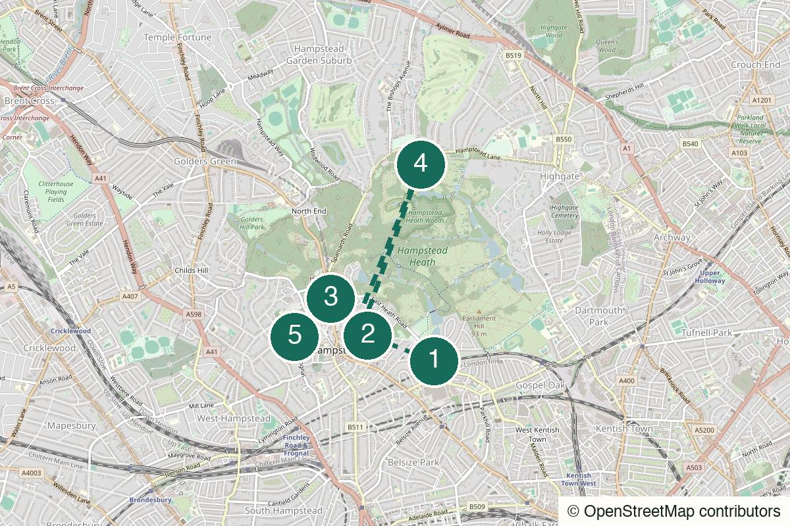

London Not yet field-walked
Crystal Palace
Views, eccentric park details and a pub finish that earns itself.
Crystal PalaceCrystal Palace or Gipsy Hill
Walked in person
Start by the Heath, take the ponds seriously, then climb to Kenwood before tiny cafés and a properly useful pub finish.

Field-walked from Hampstead Heath Overground in August 2026. The Magdala works as a low-key opening, Burgh House Café as a light bite, and the ponds become a real walk only when extended uphill to Kenwood House. The Old White Bear was the cosiest pub stop. The Wells Tavern remains an optional drink, but is no longer the food recommendation in this guide.
Walked it? A field note keeps the route current.
Hampstead Heath Overground (preferred) or Hampstead Underground (alternative) – Preferred: leave Hampstead Heath Overground at South End Green. Alternative: Hampstead Underground adds a 15–20 minute downhill walk to The Magdala.
The Magdala
Open the whole walk (opens in a new tab)
Heath paths can be muddy, dark or temporarily diverted. Use live walking directions at each anchor, keep to signed public paths, check Kenwood opening access before relying on its toilets, and book Well Walk Theatre in advance if you want a screening.
We never ask for your location.
Start beside the Heath rather than in the village centre, and let the route earn its Hampsteadness gradually: an independent pub, a small theatre, a semi-hidden café, then the ponds and the climb to Kenwood. By the time you reach New End, the pub is an ending rather than a rescue. Hampstead Underground still works as an alternative entrance; it simply adds a steep first section to the same sequence.
Not flat, not cheap-cheap, and not a route for people who want every stop booked or every meal choice guaranteed.
Best for a date where the walking is part of the conversation. The Magdala is a low-pressure meeting point; Burgh House Café offers a natural pause before the Heath.
Works for a small group that will not resent a hill. Avoid making it the plan for anyone with limited mobility without adapting it first.
A reliable reset route alone, especially when you want a proper change of visual rhythm without leaving London.

2A South Hill Park, Hampstead, London NW3 2SB
From the previous point: From Hampstead Heath Overground, exit at South End Green, cross towards South Hill Park and keep The Magdala pin open. From Hampstead Underground, follow the live walking route downhill to the same pin.
A good independent-pub opening directly by the preferred station. Take one drink, meet here, or treat it as a clean alternative finish if you decide not to climb back into the village.
Walk here from the station (opens in a new tab)Open this point (opens in a new tab)Official information (opens in a new tab)
49 Willow Road, Hampstead, London NW3 1TS
From the previous point: Climb Well Walk from The Magdala, using the theatre pin rather than trying to cut across the slope.
A small bookshop, café and cine-club that makes the climb feel purposeful. It is optional: check the live programme and reserve before planning around a screening.
Walk from the previous stop (opens in a new tab)Open this point (opens in a new tab)Official information (opens in a new tab)
New End Square, Hampstead, London NW3 1LT
From the previous point: Continue through the lanes from Well Walk Theatre to New End Square. Keep the pin open rather than cutting through private-looking mews.
Use the café for breakfast, cake or a light lunch rather than the route's main meal. Its lower-ground and courtyard setting has the semi-secret feeling the route needs; it is first-come-first-served, so check current opening before relying on it.
Walk from the previous stop (opens in a new tab)Open this point (opens in a new tab)Official information (opens in a new tab)
Hampstead Heath and Kenwood, London NW3
From the previous point: Join signed public paths from New End Square, pass the ponds, then continue uphill towards the Kenwood House pin instead of turning back as soon as the water ends.
The ponds alone are a short interlude. Continue to Kenwood for the high view and a practical toilet stop before the pub finish; check the estate's current opening access if you need the facilities.
Walk from the previous stop (opens in a new tab)Open this point (opens in a new tab)Official information (opens in a new tab)
Well Road and New End, Hampstead, London NW3
From the previous point: Leave Kenwood by the signed route back to New End and follow the live map to The Old White Bear. The Duke of Hamilton is a short walk away on New End if you want the main meal instead.
Choose The Old White Bear for the cosy pub atmosphere. Choose The Duke of Hamilton when dinner matters more: it is the current food recommendation from field feedback. The Wells Tavern is deliberately not listed as the meal stop in this version.
Walk from the previous stop (opens in a new tab)Open this point (opens in a new tab)Official information (opens in a new tab)
Nearest practical station: Hampstead Underground
Hampstead Underground is the simplest finish from New End. If you stop after the ponds instead, return from Hampstead Heath Overground.
Late morning or early afternoon, especially autumn or winter
Take breakfast or a snack at Burgh House Café, a drink at The Old White Bear, and make The Duke of Hamilton the dinner choice if food matters. The Wells Tavern can still be a drink stop, but this guide no longer recommends it for a meal after a field walk; always check current menus yourself.
The preferred full route: Magdala, Well Walk, Burgh House Café, ponds, Kenwood, then a pub or dinner in New End.
Start at Hampstead Underground, walk downhill to The Magdala, then follow the preferred sequence. Expect a steeper opening and a slightly longer day.
Use The Magdala, Well Walk Theatre if something is on, Burgh House Café if open, and The Old White Bear. Skip the Heath and Kenwood rather than forcing the long outdoor middle.
Do not turn back at the ponds: climb to Kenwood House for the view, the pause and the toilets, then descend to New End for a pub finish.
After Burgh House Café, return to Hampstead Underground. From the ponds, return to Hampstead Heath Overground instead of committing to Kenwood.
Help keep it useful
Closed gates, changed hours and the point where you bailed are more useful than polite applause.